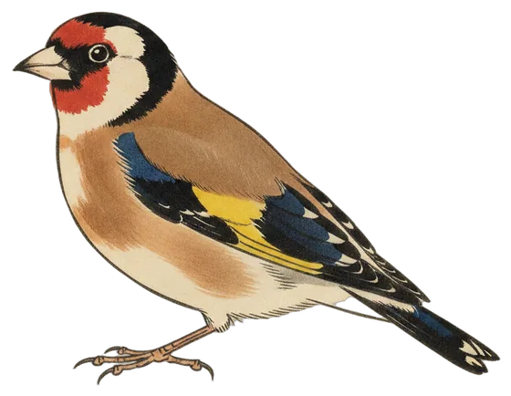

Lead story
A single goldfinch call carries the day
Eleven species and 152 calls in the 24 hours to 8:30 am, with a lone European Goldfinch heard once yesterday evening and the Yellow-rumped Thornbill doing the heavy lifting.

The European Goldfinch takes the front page today on the strength of one call, heard at 5:24 pm yesterday and not again. It was the only call of its kind in the whole 24 hours.
The goldfinch lives in the Canberra region year-round and is a moderately common bird around these parts, but the station has picked it up on only 5 of the 47 days it has been listening. Its song is a pleasant silvery twittering, and its call is a melodic tickeLIT.
Elsewhere in the tally, the Yellow-rumped Thornbill accounted for 99 calls, well clear of the Australian Magpie and Pied Currawong on 18 each. The busiest stretch was 6 pm to 7 pm, with 35 calls, and four species managed just a single call each: the goldfinch, the Grey Fantail, the Silvereye and the Willie Wagtail.
- Calls
- 1
- First heard
- Sun 5:24 pm
- Best call
- 77%
- Days heard
- 5 of 47